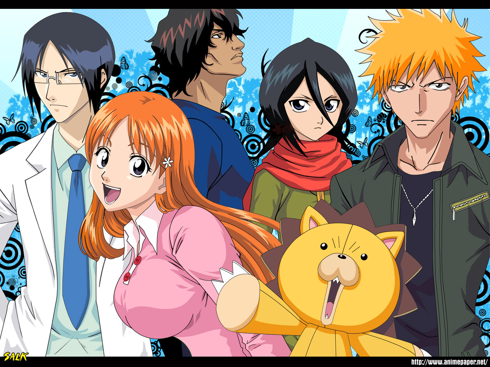

About Ichigo
Ichigo Kurosaki is a 16 year old teen who meets a soul reaper named Rukia Kuchiki. During a fight with a monster called a hollow, Rukia, who was injured saving Ichigo's family, transfered her soul reaper power to Ichigo. With this power Ichigo defeats the hollow and his life as he knows it is about to change. With the help of his friends he will tackle new foes and learn about his hidden abilites as a soul reaper.
Ichigo's friends
Ichigo's Characteristics
- He has qualities of a hero.
- He helps those in need.
- Never gives up no matter how tough the fight gets.
Ichigo's Friends
Ichigo has many friends. He does have a rival and his name is Uru Ishida. He is a quincy and has extraordinary powers. Click the link below to read more about them.